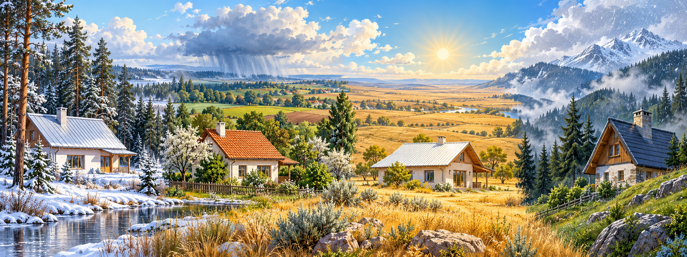

Змініть матеріал даху та інтенсивність сонячного світла. Проведіть кілька дослідів, порівняйте графіки температури й запропонуйте конструкцію даху для спекотного дня.
Фізика · інформатика · інженерія · математика
7–9 класи35–45 хвІндивідуально або в парі

Кліматичні умови різних регіонів України впливають на вибір конструкції та покриття даху.
Мета й очікуваний результат
Учні досліджують, як властивості покриття та освітлення впливають на нагрівання приміщення, планують порівняння, фіксують дані й обґрунтовують інженерне рішення.
Наприкінці уроку учень/учениця: формулює гіпотезу; проводить контрольований дослід; читає графік; робить висновок із числовим доказом.
Потрібно: пристрій з браузером, ця сторінка, зошит або електронна таблиця.
Проблемна ситуація
У спекотні дні маленький будиночок швидко нагрівається. Потрібно обрати матеріал даху, який зменшить нагрівання всередині, але залишиться практичним для будівництва.
Завдання команди: дослідити кілька покриттів і обґрунтувати, яке з них найкраще знижує температуру в будиночку.
Запитання дослідження
Як колір і теплоізоляційні властивості матеріалу даху впливають на зміну температури всередині будиночка за однакової інтенсивності освітлення?
Гіпотеза: якщо…, то…, тому що…
Дах у різних кліматичних умовах України
Це навчальні приклади для порівняння. Межі кліматичних областей і місцеві умови різняться, тому оцінюйте конкретне місце: опади, вітер, сонце, сніг і перепади температур.
ПОЛІССЯ · вологіше й лісисте
Захист від вологи
Приклад рішення: металеве покриття із захисним шаром, водонепроникна підпокрівельна мембрана та вентиляційний проміжок.
Зверніть увагу на стики, відведення дощової води й захист металу від корозії. Сам метал майже не утеплює будинок.
ЛІСОСТЕП · сезонні контрасти
Баланс на весь рік
Приклад рішення: черепиця або металочерепиця разом із теплоізоляцією, підпокрівельним шаром і вентиляцією.
Керамічна черепиця важча за металеве покриття, тому конструкцію даху потрібно розрахувати на її масу.
СТЕП · більше сонця й спеки влітку
Менше перегрівання
Приклад рішення: світле покриття з високим відбиттям сонця та належна теплоізоляція; кріплення має витримувати вітрові впливи.
Світлий колір може зменшити поглинання сонячного випромінювання, а утеплювач сповільнює перехід тепла всередину.
КАРПАТИ · опади, сніг і вітер
Надійність конструкції
Приклад рішення: дах із достатнім ухилом, водонепроникним покриттям і надійними кріпленнями; передбачають відведення води та безпечне поводження зі снігом.
Можливі металеві листи, черепиця чи інші системи — вибір залежить від розрахунку навантажень, ухилу та конструкції.
Важливо: це приклади для навчального обговорення, а не готові будівельні рекомендації. Реальні покрівлі проєктують із перевіркою теплових показників, снігових і вітрових навантажень.
Що дає кожен матеріал?
Металеве покриття
Легке й доступне в різних кольорах. Метал швидко передає тепло, тому потрібні правильно підібрані утеплення та вентиляція; світле покриття відбиває більше сонячного світла, ніж темне.
Керамічна черепиця
Довговічне покриття з більшою масою. Потрібна конструкція, розрахована на вагу черепиці. Сама черепиця не замінює теплоізоляцію.
Теплоізоляція
Зменшує потік тепла крізь дах. Важливі суцільність шару, правильний захист від вологи й вентиляція покрівлі.
Зелений дах
Рослинність і субстрат затінюють поверхню та можуть пом’якшувати нагрівання. Потрібні водонепроникність, дренаж і розрахунок значної додаткової ваги.
Компетентнісна задача
Спроєктуйте дах для будиночка, який нагрівається на сонці. За даними моделі оберіть матеріал і доведіть, що він краще захищає внутрішній простір.
План уроку · 45 хвилин
Вступ і гіпотеза — 7 хв · знайомство з моделлю — 5 хв · експерименти — 15 хв · аналіз даних — 10 хв · інженерний висновок — 8 хв.
Передбачте результат. Запишіть гіпотезу: який дах нагріється найсильніше, а який найкраще захистить кімнату?
Ознайомтеся з моделлю. Перетягніть матеріал даху в зону будиночка або натисніть на картку. Оберіть однакові умови для порівнюваних спроб.
Проведіть дослід. Запустіть модель і спостерігайте за температурою протягом 120 умовних хвилин.
Зберіть дані. Збережіть результат кожного матеріалу. Для чесного порівняння змінюйте лише один чинник за раз.
Зробіть висновок. Порівняйте кінцеві температури та графіки. Поясніть вибір і назвіть обмеження моделі.
Змінюємо: матеріал даху або інтенсивність світла. Вимірюємо: температуру всередині з часом. Тримаємо сталими: зовнішню температуру та тривалість досліду.
Інтерактивне завдання
Доберіть дахове рішення до клімату
Перетягніть картку зліва до відповідного регіону. На телефоні можна натиснути картку, а потім потрібну зону. Кілька рішень можуть бути можливими в реальному будівництві; тут оберіть найкращий із запропонованих варіантів.
Картки рішень
Стійкість до вологиМетал із захисним покриттям, мембрана й вентиляційний проміжок.
Комплексне утепленняЧерепиця або металочерепиця з теплоізоляцією та вентиляцією.
Захист від сонцяСвітле відбивне покриття, теплоізоляція та надійне кріплення.
Відведення опадівДостатній ухил даху, міцні кріплення й покриття, що відводить воду та сніг.
Кліматичні умови
Полісся
Волога, опади, ризик намокання покрівлі.
Перетягніть картку сюди або натисніть після вибору
Подумайте, як покрівля захищається від води та вологи, а метал — від корозії.
Лісостеп
Холодний сезон і тепле літо, потрібен баланс.
Перетягніть картку сюди або натисніть після вибору
Тут важливо, щоб покрівля працювала протягом усього року. Порівняйте покриття з окремим шаром утеплення.
Степ
Сильне літнє сонце та вітрові впливи.
Перетягніть картку сюди або натисніть після вибору
Яка поверхня відбиває більше сонячного світла? Чи достатньо самого кольору без утеплення?
Карпати
Багато опадів, сніг і вітер у гірській місцевості.
Перетягніть картку сюди або натисніть після вибору
Зверніть увагу на форму даху, відведення води й те, як конструкція та кріплення витримують навантаження.
Інтерактивна експериментальна модель
Проведіть дослід
Перетягніть покриття на дах або виберіть його натисканням. Для сенсорного екрана зручніше натискати.
Без реєстрації · працює в браузері
1. Оберіть покриття
Світлий метал Перетягніть сюди матеріал
Світлий метал
Темний метал
Черепиця
Утеплена панель
Зелений дах
Тривалість кожного досліду — 120 умовних хвилин. Умови можна змінити перед наступним запуском.
Модель готова до запуску.
☀️
╲ ╲ ╲ ╲ ╲ ╲
🌡️
25.0 °C
Температура всередині25.0 °C
Найвища за дослід—
Час моделі0 хв
Графік температури
X — час, Y — температура
Результати експериментів
Проведіть дослід для кількох матеріалів та натисніть «Зберегти результат». Порівняйте кінцеву температуру за однакових умов.
Матеріал
Світло
Зовні
Температура через 120 хв
Максимальна
Тут з’являться збережені результати дослідів.
Обговоріть результати
Який матеріал дав найнижчу температуру всередині?
Чи підтвердилася ваша гіпотеза? Наведіть дані.
Що зміниться, якщо зменшити освітлення для кожного даху однаково?
Які ще чинники треба врахувати в реальному будинку?
Висновок команди
Завершіть речення, спираючись на таблицю та графік:
«Для нашого будиночка ми обираємо дах із …, тому що за умов … модель показала … . У реальному будівництві додатково потрібно перевірити …»
Самооцінювання
Перед завершенням перевірте, чи можете ви:
назвати змінюваний чинник і умови, які залишали сталими;
навести числа з таблиці або графіка як доказ;
пояснити, чому модель не дає точного прогнозу для справжнього будинку.
Для оцінювання можна використати три критерії: планування чесного досліду, коректний аналіз даних, обґрунтованість інженерного рішення.
STEM конструкція
Science · наукаДосліджуємо поглинання світла й передавання тепла.
Technology · технологіїПрацюємо з інтерактивною моделлю та графіком.
Engineering · інженеріяОбираємо матеріал для розв’язання практичної проблеми.
Mathematics · математикаПорівнюємо температури й аналізуємо дані.
Про модель: це спрощена навчальна симуляція. Вона показує загальні тенденції, а не точний прогноз для конкретного будинку. У реальності на результат також впливають товщина й колір покриття, вентиляція, вікна, вологість, вітер і конструкція стін.